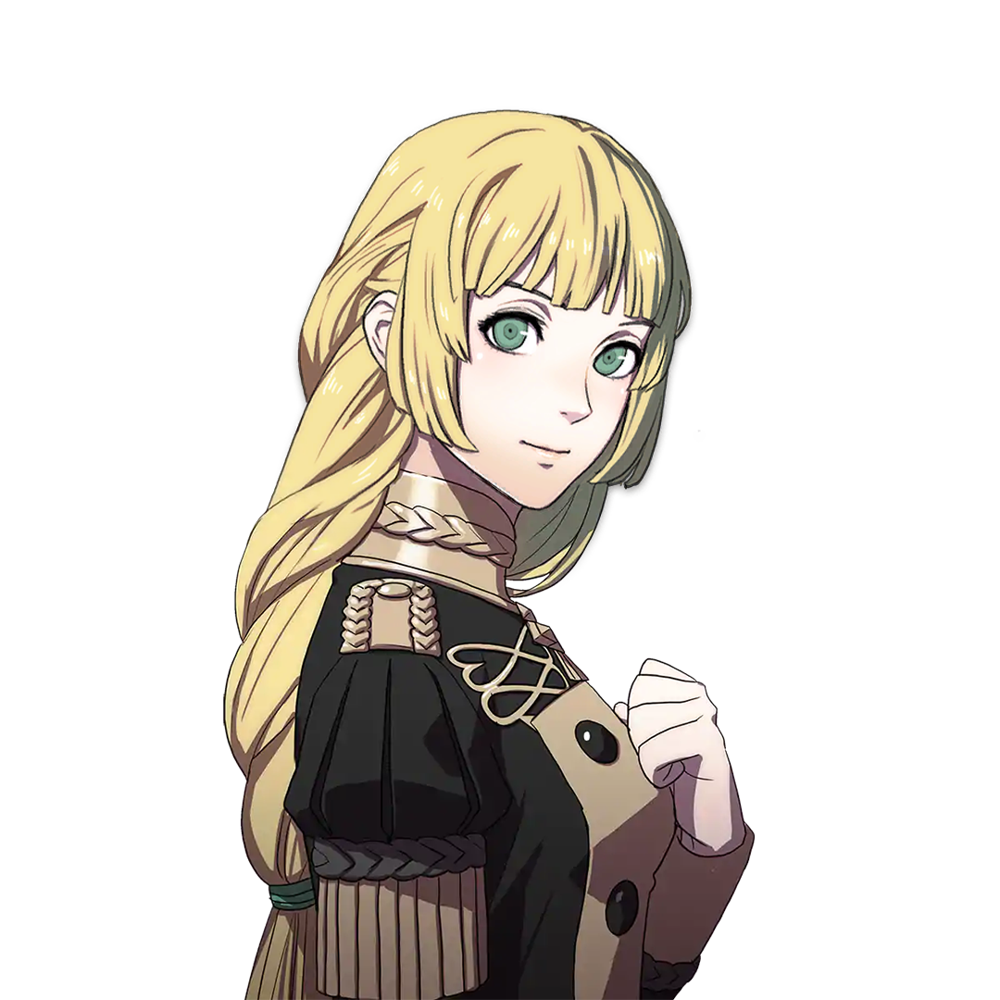
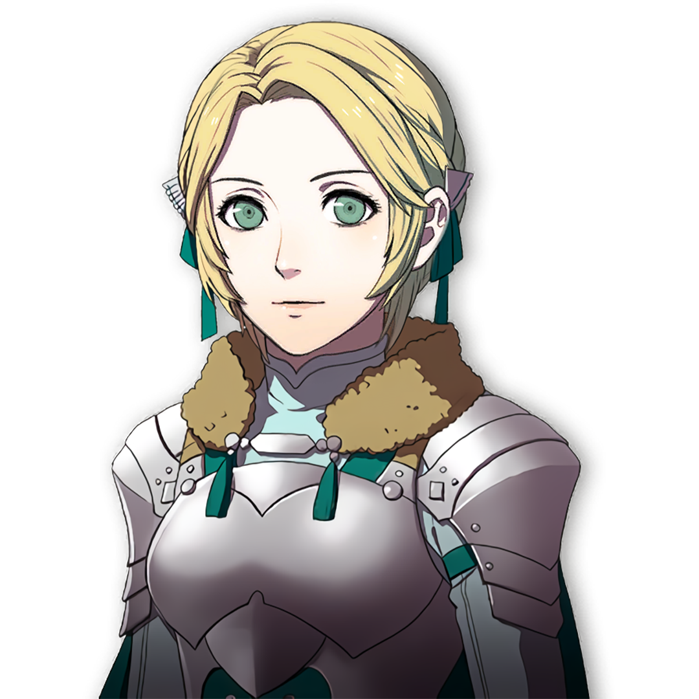

Ingrid


Gender: F
Age: 17
Crest: Minor Crest of Crest of Daphnel
Height (cm): 165
Nationality: Holy Kingdom of Faerghus
Birthday: 1/4 - Guardian Moon
Interests: Reading, Eating
Likes: Food samples, meaty meals, looking after horses, tales of chivarly, virtuous knights
Dislikes: Extravagance, hunger, the people of Duscur
Status: Heir to House Galatea